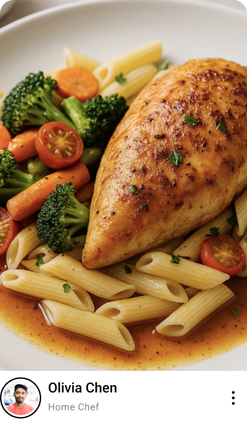
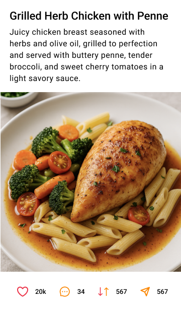
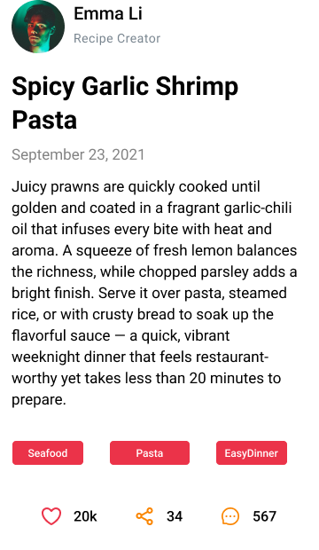
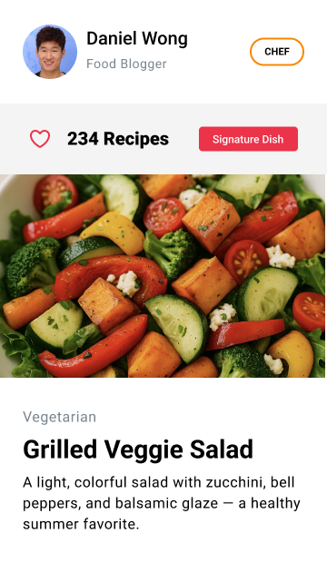
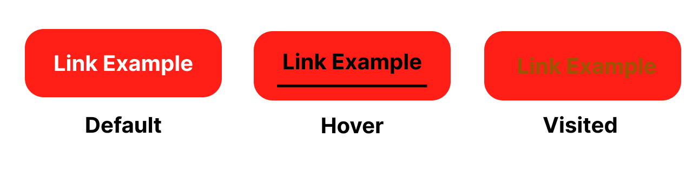

Behavioural Design
This page presents behavioural-level design: link styles, navigation and menus, card Components, icons, buttons, and forms including API submission feedback.
Card Components




Recipe-sharing card components use appealing food images and clear call-to-action buttons for interaction. With logical information hierarchy and visual consistency, they enhance usability and reinforce the platform's brand.
Link styles

Styling link states (normal, hover, visited) focuses on accessibility and clarity. Visual changes in each state help users distinguish link conditions, enhancing navigation and user experience.
Icons
Red and orange, as warm-toned colors, evoke strong emotions and attract attention. They enhance visual appeal, guide user interaction, and contribute to brand consistency across the platform.
Forms Demo
The "Community Form" is a registration form for joining the community, where users can enter their name, email, message, and optionally upload a photo, and forms including API submission feedback.